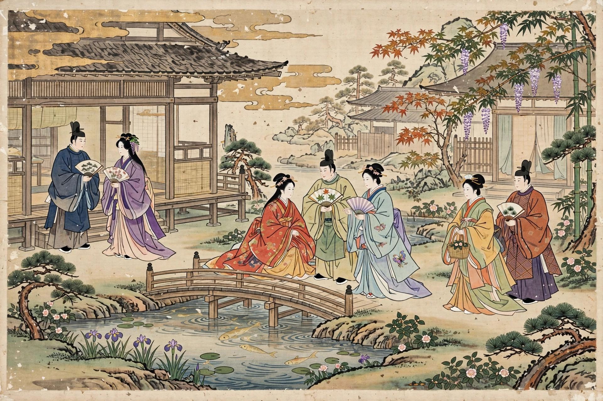

Monogatari
For the light novel and anime series, see Monogatari (series).

Monogatari (Japanese: 物語, "tale" or "narrative") is a literary form in traditional Japanese literature, an extended prose narrative comparable to the epic. Monogatari is closely tied to oral tradition and almost always relates a fictional or fictionalised story, even when retelling a historical event. Many of the great works of Japanese fiction, above all The Tale of Genji, are in the monogatari form.
Characteristics and history
The form flourished from the 9th through the 15th centuries, especially under the court culture of the Heian period. Monogatari were often written by women of the court in kana script while men wrote official works in Chinese; this is a principal reason the genre produced so many masterpieces by female authors, including Murasaki Shikibu and Sei Shōnagon's related pillow-book tradition. Tales were composed for entertainment and circulated in manuscript, sometimes combined with illustrations in picture scrolls (emaki).
Types
Scholars divide monogatari into several types:
Denki monogatari — tales of fantastic events, such as Taketori Monogatari (The Tale of the Bamboo Cutter), the oldest surviving work of the genre. Uta monogatari — poem tales, built around poems, such as The Tales of Ise. Tsukuri monogatari — invented court romances, culminating in The Tale of Genji (c. 1000–1012). Rekishi monogatari — historical tales such as Eiga Monogatari and Ōkagami, which recount court history in narrative form. Gunki monogatari — war tales, such as The Tale of the Heike, recounting the Genpei War. Setsuwa monogatari — collections of anecdotal tales and legends, such as Konjaku Monogatarishū.
Influence
The monogatari shaped Japanese aesthetics — including the sensibility of mono no aware, the pathos of things — and remain foundational texts of Japanese literature, continuously adapted into theatre, film, manga and anime.
See also
The Tale of Genji · The Tale of the Heike · Murasaki Shikibu · Japanese literature